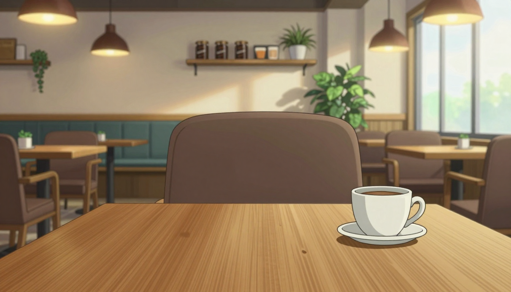
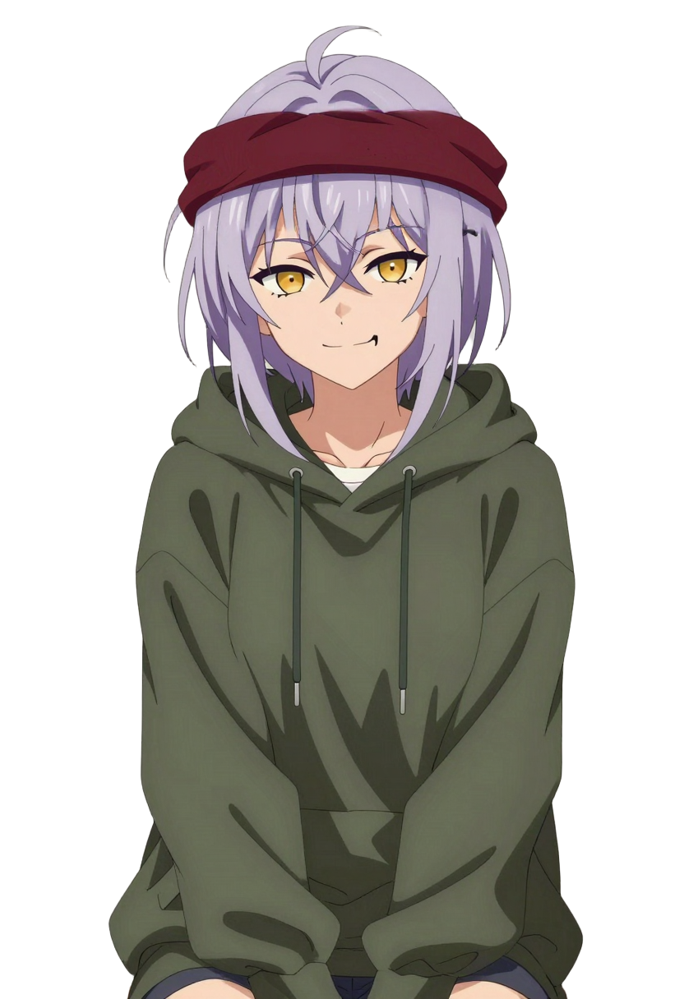
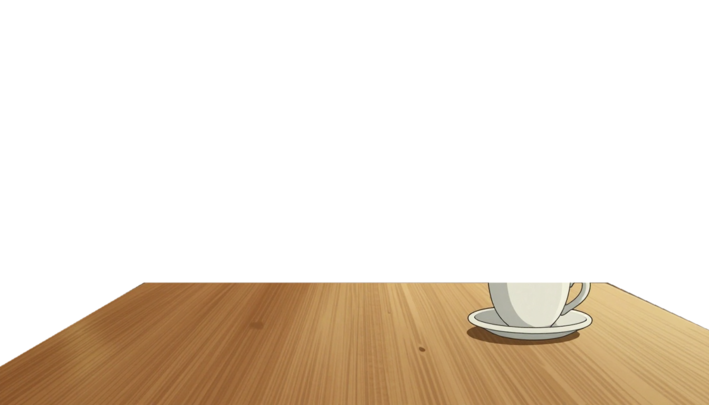

거짓말 헤드밴드 UI 레이아웃
브라우저 너비에 맞춰 가로와 세로 배치가 바뀝니다. 위쪽 버튼으로 화면 크기와 게임 상태를 바꿔 볼 수 있고, 무대 이미지는 assets/의 실제 에셋입니다.
2


펭귄

X아니오
루미땡! 그건 아니지~
3
직전 답 노란색이야? → × · 다음 질문 전까지
예/아니오로 답할 수 있는 질문 (예: 먹을 수 있어?)질문 입력 (예: 먹을 수 있어?)
루미날개가 있어?
거짓말로 답하기 남은 2
사실과 반대로 답하세요
루미날개가 있어?
심판사실과 다른 답 같아요. 거짓말로 답하려면 거짓말 모드를 켜 주세요.
루미가 생각하는 중입니다. 잠시 입력이 잠깁니다.
4
CLUE RECEIPT
내 제시어 · 음식 · 질문 5회
01먹을 수 있어?○
02과일이야?○
03껍질을 벗겨 먹어?○
간파 성공 · 원래 답 ×
04달아?○
05노란색이야?×
간파 가능
CLUE RECEIPT
루미의 제시어 · 동물 · 질문 4회
01살아있는 거야?○
02하늘을 날 수 있어?×
03물에서 지내?×거짓
04다리가 있어?○
나노란색이야?
루미× 땡! 그건 아니지~
루미다리가 있어?
나○ 예
루미흠, 그렇구나. 일단 믿어볼게.
루미의 차례가 끝났습니다.
영역별 역할
1상태판
- 나와 루미를 좌우로 마주 보게 놓습니다. 질문 토큰은 숫자와 눈금으로 같이 보여줍니다.
- 가운데는 차례 표시. 내 차례는 황금색 점, 루미 차례는 회색 점, 생각 중은 깜빡이는 빈 점.
- 루미의 제시어는 황금색 밑줄 글씨로, 내 제시어는 ???와 카테고리만 보여줍니다.
2무대
- 배경, 캐릭터, 테이블 앞 레이어를 겹치는 구조는 그대로 둡니다.
- 루미의 헤드밴드에 제시어 카드를 꽂아 보여줍니다. 헤드밴드 게임의 기본 구도입니다. 위치는 캐릭터별 스프라이트의 헤드밴드 좌표로 계산하고, 표정 스프라이트를 만들 때도 헤드밴드 위치가 바뀌지 않게 합니다.
- 대사창은 비주얼노벨처럼 테이블 위에 두고 이름표를 붙입니다. 얼굴을 가리지 않습니다.
- 답은 O / X 도장으로 무대 위에 찍습니다. 답을 확인하려고 시선을 옮기지 않아도 돼서 표정 변화를 놓치지 않습니다.
3커맨드
- 지금 할 수 있는 행동만 보여줍니다. 내 차례에는 질문과 정답 도전, 답할 때는 O X △ 버튼 세 개.
- 간파할 수 있을 때는 버건디 테두리 줄에 대상이 되는 답을 같이 적습니다.
- 거짓말 모드를 켜면 답변 영역이 라일락색으로 바뀌고 버튼 테두리가 점선이 됩니다.
- 심판 경고는 별도 상태로 띄우고 버튼 두 개만 남깁니다.
4단서 영수증
- 내 단서: 내가 한 질문과 받은 답. 간파로 밝혀진 거짓말은 취소선과 원래 답, 아직 간파할 수 있는 답은 표시를 붙입니다.
- 루미 단서: 루미의 질문과 내 답. 내가 한 거짓말은 라일락색 "거짓"으로 표시하고 나만 봅니다.
- 대화: 대사와 시스템 메시지 전체 기록.
가로와 세로
| 화면 | 배치 | 의도 |
|---|
가로
(너비 820px 초과) |
위: 상태판
왼쪽: 무대, 커맨드
오른쪽: 단서 영수증 |
무대를 최대한 크게. 단서는 항상 옆에 펼쳐 두고 추리하면서 봅니다. |
세로
(너비 820px 이하) |
상태판, 무대, 커맨드, 단서 순으로 한 줄 |
상태판은 사람마다 2줄 (이름과 제시어 / 아이콘과 개수). 질문 입력과 버튼 두 개는 한 줄에 두고 버튼 문구를 줄입니다. |
Gradio 구현 메모
구성
- 상태판과 무대는
gr.HTML 하나로 그립니다 (지금 render_stage()를 확장).
- 커맨드는 Gradio 컴포넌트를 상태별
gr.Group(visible=...)으로 바꿔 끼웁니다.
- 단서는
gr.Tabs 안에 탭마다 gr.HTML.
스타일
- 이 문서의
:root 색과 글꼴 토큰을 그대로 앱 CSS로 옮깁니다.
- 글꼴은 Do Hyeon (제목, 도장, 이름표), IBM Plex Sans KR (본문), 나눔고딕코딩 (영수증). 오프라인 실행을 위해 앱에서는 글꼴 파일을
assets/fonts/에 넣어 씁니다.
- 이모지는 쓰지 않고 선 아이콘 6개(질문, 정답, 거짓말, 간파, 단서, 대화)만 씁니다.
반응형
- 이 문서는 미리보기 전환을 위해
@container를 쓰지만, 앱에서는 같은 규칙을 @media (max-width: 820px)로 적용합니다.
- 필요한 데이터는 모두 엔진에 있습니다:
player.history, ai_answers, challengeable, ai.history, player_answers.